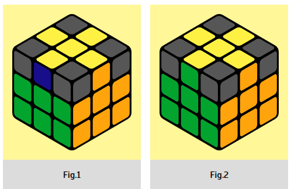

Stage 5. Correct yellow cross
|  |
The resulting cross may be incorrect (Fig. 1). We need to make sure that all
the colors on the edges of the cross (3 layers) match the centers (Fig. 2). Attention, we can
have only three situations: 1. the edges match next to each other 2. the edges match opposite
each other 3. you are lucky, and the cross is correct right away or you just need to turn the
top layer.
|